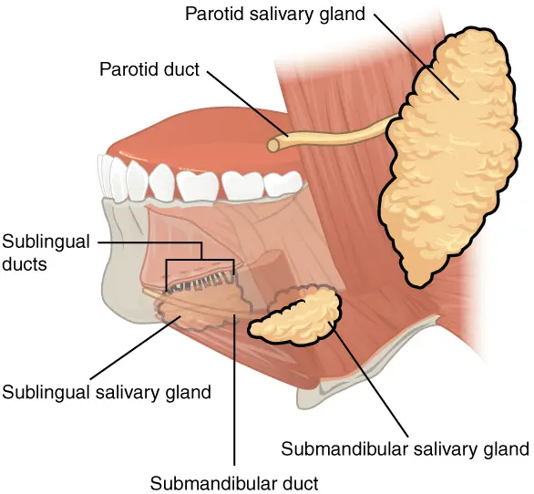
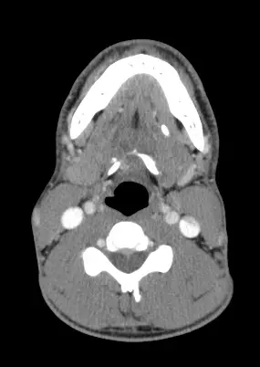

DX.10 — Sialolithiase sous-mandibulaire
Une douleur et un gonflement sous la mâchoire qui surviennent pendant les repas évoquent un calcul du canal de WhartonS8S5. L'échographie confirme le diagnostic dans la grande majorité des cas, et la sialendoscopie permet souvent de conserver la glandeS7S6. Le médecin reste attentif à l'abcès, qui complique parfois un calcul méconnu, et à la tumeur calcifiée, qui peut l'imiterS7S9.
1. Définition
La sialolithiase est la formation de calculs calcifiés dans le système canalaire d'une glande salivaire, qui gênent l'écoulement de la salive vers la boucheS8. Les calculs salivaires, ou sialolithes, sont des concrétions calcifiées des glandes salivaires, selon l'équipe dentaire d'AmsterdamS5. La forme sous-mandibulaire touche la glande située sous la partie horizontale de la mandibule, qui se draine sous la langueS1.
2. Épidémiologie (Suisse, puis Europe)
La Suisse ne publie pas d'incidence nationale de la sialolithiase ; les données européennes les plus solides viennent du registre danoisS4. Les chiffres européens, la répartition entre les glandes et le profil des patients expliquent pourquoi le calcul sous-mandibulaire domine la pratique. En Suisse, les équipes genevoises ont publié des séries sur l'échographie et la sialendoscopie, qui décrivent surtout les patients adressésS2S3.
Chiffres européens : incidence et délai diagnostique
| Donnée | Valeur | Population | Source |
|---|---|---|---|
| Incidence, cas confirmés visuellement | 7,27 pour 100 000 personnes-années | Danemark, 2003-2009 | S4 |
| Incidence, tous les cas enregistrés | 14,10 pour 100 000 personnes-années | Danemark, 2003-2009 | S4 |
| Incidence des études hospitalières antérieures | 2,9 à 5,5 pour 100 000 personnes-années | Données hospitalières sélectionnées | S4 |
| Incidence estimée dans la population | 28 à 59 cas par million et par an | Revue citée par Düsseldorf | S8 |
| Âge moyen au début des symptômes | Environ 45 ans | Revue citée par Düsseldorf | S8 |
L'étude danoise inclut pour la première fois les cabinets privés d'oto-rhino-laryngologie (ORL), ce qui explique une incidence plus élevée que dans les séries hospitalièresS4. Dans ses sous-échantillons de validation, seuls 35 % des calculs supposés en cabinet et 59 % à l'hôpital ont été confirmés visuellementS4.
Quelle glande, quel segment du canal ?
Les calculs siègent plus souvent dans la glande sous-mandibulaire, à 84 %, que dans la parotide, à 13 %, selon la revue néerlandaiseS5. La majorité des calculs sous-mandibulaires, soit 90 %, se trouvent dans le canal de Wharton, alors que les calculs parotidiens restent plutôt intraglandulairesS5.
L'équipe d'Erlangen estime que jusqu'à 80 % de tous les calculs siègent dans la glande sous-mandibulaireS6. Elle précise que seuls 10 % environ des calculs sont situés dans le parenchyme, en arrière du hile de la glandeS6. La glande sublinguale reste rarement atteinte, après la sous-mandibulaire et la parotideS8.
Âge, sexe et région
Au Danemark, l'incidence la plus élevée concerne les personnes de 60 à 70 ans, les femmes et la région du Jutland du NordS4. La série de Düsseldorf trouve au contraire un rapport hommes-femmes proche de un, avec un âge moyen de 41,67 ans pour la glande sous-mandibulaireS8.
Chez l'enfant, la sialolithiase est rare : la série franco-genevoise réunit 26 enfants, d'âge moyen 12 ans, traités entre 2007 et 2011S3. Dans cette série pédiatrique, 22 enfants avaient un calcul sous-mandibulaire et quatre un calcul parotidienS3.
À Düsseldorf, la glande sous-mandibulaire n'était atteinte que dans 58,6 % des cas, alors qu'une étude antérieure rapportait 92 %S8. Les auteurs attribuent cet écart à la petite taille de leur série de 87 patients, ce qui invite à lire ces proportions avec prudenceS8.
3. Physiopathologie
Le calcul se forme dans le canal, bloque la salive au moment où la glande sécrète, puis expose la glande stagnante à l'infectionS8S7. L'anatomie des glandes salivaires, la formation du calcul et les conséquences de l'obstruction expliquent les symptômes et les complications.
Les glandes salivaires sur un schéma en couleurs
Les trois paires de glandes salivaires. Ce schéma en couleurs d'OpenStax montre la parotide, la glande sous-mandibulaire, la glande sublinguale et leurs canaux excréteursS12.

Le lecteur doit suivre d'abord le trajet du canal sous-mandibulaire, de la glande jusqu'au plancher de la bouche.
La copie annotée de « Glandes salivaires » numérote les repères que la lecture guidée explique ci-dessous.
- 1. Le canal parotidien traverse la joue et s'ouvre dans la joue en regard de la deuxième molaireS1S12.
- 2. La parotide se trouve sous le lobule de l'oreille et la partie inférieure du visage ; elle est le deuxième siège des calculsS1S8.
- 3. La glande sous-mandibulaire, sous la branche horizontale de la mandibule, est le siège principal des calculsS1S6.
- 4. Le canal sous-mandibulaire, ou canal de Wharton, est long et courbe ; il contient la majorité des calculs de cette glandeS8S5.
- 5. La glande sublinguale, sous la muqueuse du plancher, se draine par de petits canaux et reste rarement atteinteS12S8.

Comment le calcul se forme
La glande sous-mandibulaire est particulièrement exposée, car sa salive séromuqueuse et son canal long et courbe favorisent la calcificationS8. Les auteurs de Düsseldorf discutent aussi les variations de composition ionique, de débit et de pH de la salive, le tabagisme et la déshydratationS8.
Le calcul comporte un noyau minéralisé amorphe, entouré de couches concentriques de substances organiques et inorganiquesS5. Ses composants inorganiques principaux sont l'hydroxyapatite, l'apatite carbonatée, la whitlockite et la brushiteS5. La partie organique contient du collagène, des glycoprotéines, des acides aminés et des glucidesS5.
De l'obstruction à l'abcès
La sialolithiase est la cause la plus fréquente de sialadénite obstructive des glandes salivaires majeuresS8. Elle peut entraîner une sialadénite aiguë purulente, qui évolue parfois vers un abcès de la glande ou de son voisinageS7.
L'équipe d'Erlangen considère la sialolithiase comme la cause la plus fréquente d'abcès salivaire, qu'il faut donc toujours rechercherS7. Sans retrait du calcul, des abcès, des fistules et des inflammations phlegmoneuses ont été décritsS8.
4. Démarche diagnostique : les graves d'abord
Le premier geste écarte une infection grave du plancher ou du cou, puis le médecin écarte une tumeur qui imiterait le calculS7S9. Les situations graves et les diagnostics qui imitent ou accompagnent le calcul sont détaillés avant l'enquête ordinaire.
Ce qui ne peut pas attendre
Une fièvre avec tuméfaction cervicale douloureuse fait craindre une sialadénite purulente ou un abcès, qui justifie par prudence un avis ORL le jour mêmeS7. L'abcès apparaît à l'échographie comme une zone hypoéchogène ou anéchogène, avec un renforcement postérieurS7.
La Société suisse d'ORL et de chirurgie cervico-faciale (SSORL) décrit une complication exceptionnelle de la sialendoscopie, la tuméfaction cervicale qui obstrue les voies aériennesS1. Cette obstruction peut alors imposer une trachéotomie en urgence, selon la même fiche d'informationS1. Toute dyspnée ou difficulté à mouvoir la langue après le geste justifie donc un retour immédiat à l'hôpitalS1.
Diagnostics qui imitent le calcul
| Diagnostic | Argument d'orientation | Cours |
|---|---|---|
| Tumeur salivaire calcifiée | Des calcifications tumorales ont été prises pour des calculs ; l'absence de symptômes liés aux repas et d'obstruction doit alerterS9 | DX.9 |
| Sialadénite chronique sclérosante | La glande sous-mandibulaire peut devenir petite et dure à la palpation, sous le nom de tumeur de KüttnerS7 | — |
| Maladie de Sjögren | Le diagnostic final d'une sialadénite inflammatoire exige parfois l'anamnèse, la sérologie ou l'histologie, au-delà de l'échographieS7 | DX.7 |
| Sténose du canal | Une sténose avec fibrose de la paroi a causé les faux positifs échographiques de la série genevoiseS2 | — |
| Sialadénite microbienne non obstructive | Une inflammation virale ou bactérienne gonfle la glande sans atteindre d'abord les canauxS7 | — |
Les auteurs d'Erlangen rapportent deux tumeurs malignes de la parotide dont les calcifications, situées à un endroit typique, avaient été prises pour des calculsS9. Ils recommandent un indice de suspicion élevé et des examens complémentaires devant toute calcification ambiguë, même si ces tumeurs restent extrêmement raresS9.
Dans la maladie de Sjögren, un lymphome du tissu lymphoïde des muqueuses survient dans 5 à 6 % des cas, d'où une échographie semestrielle des ganglionsS7.
5. Anamnèse ciblée et drapeaux rouges
L'anamnèse cherche le lien avec les repas, car plus de 80 % des patients décrivent une douleur et une tuméfaction typiquement prandialesS8. Le médecin précise les symptômes, les facteurs favorisants et les drapeaux rouges qui changent la conduite.
Douleur et gonflement au rythme des repas
Dans la série de Düsseldorf, 82,4 % des patients atteints à la glande sous-mandibulaire associaient tuméfaction et douleurS8. La douleur seule touchait 13,7 % de ces patients, et la tuméfaction seule 5,9 %, sans lien avec l'âge ni le sexeS8.
Les auteurs décrivent ces épisodes comme des douleurs coliques récidivantes avec gonflement de la glande atteinteS8. Le médecin note la glande atteinte, puisque la nature et l'intensité des symptômes ne différaient pas entre glande sous-mandibulaire et parotideS8.
Facteurs favorisants et antécédents
Le médecin recherche une déshydratation, un tabagisme et des épisodes antérieurs, que la littérature discute comme facteurs de calculS8. La revue néerlandaise a aussi étudié les maladies systémiques comme facteur de risque, ce qui justifie une anamnèse généraleS5.
L'âge compte aussi : une parotidite chronique récidivante juvénile se diagnostique surtout entre 1 et 3 ans, avec des épisodes douloureux de gonflementS7.
Drapeaux rouges
| Drapeau rouge | Pourquoi il compte | Source |
|---|---|---|
| Fièvre, pus et tuméfaction cervicale | Sialadénite purulente ou abcès | S7 |
| Calcification sans obstruction ni symptôme prandial | Tumeur à exclure (point 4) | S9 |
| Glande petite et dure | Sialadénite chronique sclérosante | S7 |
| Gonflement du cou ou gêne à mouvoir la langue après sialendoscopie | Complication à évaluer en urgence | S1 |
Ces drapeaux conduisent vers une imagerie ou un avis spécialisé, alors que le tableau prandial typique autorise un premier traitement conservateurS8S9.
6. Examen physique ciblé, région par région
L'examen explore le plancher et la papille, la glande sous la mandibule, le cou et les autres glandes salivaires. La coupe de scanner commentée montre à quoi ressemble un calcul du canal de Wharton visible à l'imagerieS13.
Région 1 — Plancher buccal et papille
L'inspection du plancher recherche l'orifice du canal sous-mandibulaire sous la langue, par où la salive se vide dans la boucheS1. La palpation intrabuccale du plancher peut retrouver un calcul, puisque la chirurgie transorale vise justement les calculs palpablesS6.
L'orifice de la papille est étroit, si bien qu'une mini-papillotomie est nécessaire dans la grande majorité des extractions de calculs distauxS6.
Région 2 — Glande sous-mandibulaire
La glande se palpe sous la partie horizontale de la mandibule, où elle peut apparaître gonflée, sensible ou induréeS1S7. Une glande petite et dure fait évoquer une sialadénite chronique sclérosante, plutôt qu'une obstruction récenteS7.
Lors de l'échographie, le doigt qui palpe peut sortir un petit calcul de l'ombre acoustique de la mandibule, ce qui montre l'intérêt de l'examen bimanuelS7.
Région 3 — Cou et ganglions
La palpation du cou cherche une tuméfaction qui dépasse la glande, signe possible d'une collection périglandulaireS7. Une lymphadénite abcédée peut compliquer la sialolithiase, et l'échographie la distingue d'un abcès de la glandeS7.
Par déduction, une adénopathie persistante sans lien avec les repas sort du cadre du calcul et fait rechercher une tumeur, comme au DX.9S9.
Région 4 — Parotides et ouverture buccale
Le médecin compare les deux parotides, car la parotide reste le deuxième siège des calculs après la glande sous-mandibulaireS8. Il note l'ouverture buccale, puisqu'une ouverture réduite ou un trismus rendent la chirurgie transorale plus difficileS6.
Un arc mandibulaire étroit, un plancher profond ou un réflexe nauséeux marqué comptent aussi parmi les conditions anatomiques défavorablesS6.
Calcul du canal de Wharton gauche au scanner : lecture guidée
Calcul du canal de Wharton. Cette coupe axiale de scanner cervical montre un calcul de 7,5 mm du canal de Wharton gauche chez un homme de 30 ansS13.

Le lecteur doit chercher seul l'image très dense du plancher buccal, du côté gauche du patient, donc à droite de l'écran.
La copie annotée de « Calcul du canal de Wharton gauche » numérote les repères que la lecture guidée explique ci-dessous.
- 1. Le calcul apparaît comme une petite image ovale très dense dans le plancher buccal gauche, sur le trajet du canal de WhartonS13.
- 2. La mandibule, très dense elle aussi, borde le plancher ; à l'échographie, son ombre peut cacher un calculS7.
- 3. L'air du pharynx apparaît en noir en arrière ; il sert de repère médian pour situer le côté du calculS13.

7. Approche syndromique
Trois tableaux conduisent au calcul : la colique salivaire, la sialadénite aiguë et la tuméfaction chronique ou récidivante. Le calcul parotidien donne un tableau voisin, mais sa prise en charge diffèreS6. Le rythme des symptômes avec les repas reste l'argument central qui sépare l'obstruction des autres causesS8S9.
Tableau 1 — Colique salivaire
La colique salivaire résume le tableau obstructif décrit au point 5, avec une douleur et un gonflement de la glande au moment des repasS8. Ce tableau intermittent explique les longs délais, puisque les symptômes durent en moyenne 2,4 ans avant le diagnosticS8.
Le gonflement de la glande pendant les repas constituait aussi l'indication principale de sialendoscopie dans la série pédiatriqueS3.
Tableau 2 — Sialadénite aiguë purulente
La glande devient chaude et douloureuse, et l'échographie montre une vascularisation accrue avec dilatation du canalS7. L'équipe d'Erlangen demande d'exclure toute obstruction, en particulier un calcul, devant une sialadénite bactérienne purulenteS7.
Une évolution défavorable vers une collection impose l'échographie, qui repère l'abcès et guide la suiteS7. Dans une sialadénite virale, l'aspect spongieux de la glande traduit surtout une perfusion accrue, plus qu'une dilatation des canauxS7.
Tableau 3 — Tuméfaction chronique ou récidivante
Une sialadénite chronique peut accompagner un calcul ancien, mais elle peut aussi relever d'une sténose ou d'une maladie inflammatoireS7S1. La SSORL regroupe les calculs, les sténoses et les inflammations des canaux parmi les indications de la sialendoscopieS1.
Une maladie auto-immune ou granulomateuse donne des infiltrations focales que l'échographie distingue souvent d'une fibrose localiséeS7.
Le calcul parotidien, diagnostic voisin
Les calculs parotidiens siègent plus souvent dans la glande elle-même, contrairement aux calculs sous-mandibulaires logés dans le canalS5. À Düsseldorf, les patients atteints à la parotide avaient en moyenne 48,91 ans, contre 41,67 ans pour la glande sous-mandibulaireS8.
Pour un calcul mobile de 3 à 5 mm au plus du canal parotidien distal, Erlangen recommande l'extraction par sialendoscopie interventionnelleS6. Les calculs durs ou de plus de 7 mm relèvent plutôt de la lithotritie intracanalaire, qui donne des succès élevésS6.
Le changement de paradigme vers la conservation de la glande vise ici surtout à éviter les lésions du nerf facialS8.
8. Diagnostic positif et critères
Le diagnostic positif associe une histoire d'obstruction prandiale et la visualisation du calcul par l'imagerie ou l'endoscopieS8S7. Les critères du calcul et les facteurs qui guident le traitement se lisent sur la même échographieS6.
Les signes qui affirment le calcul
À l'échographie, le signe direct est un écho brillant, hyperéchogène, avec un cône d'ombre postérieur netS7. La dilatation du canal en amont constitue un signe indirect, retrouvée dans 95 % des examens faussement négatifs d'une série citéeS7.
Si la dilatation manque, une stimulation de la sécrétion, par exemple par l'acide ascorbique, peut la provoquerS7. Une sténose donne au contraire une image hypo- à anéchogène le long du canal, avec renforcement postérieur mais sans véritable cône d'ombreS7.
La sialendoscopie visualise directement le calcul, et une sialendoscopie sans calcul doit faire reconsidérer le diagnosticS8S9.
Taille, siège et mobilité : ce que l'échographie décide
La taille, le siège, la mobilité et la forme du calcul influencent le résultat du traitement, et l'échographie haute résolution les visualiseS6. Selon Erlangen, l'échographie atteint une spécificité, une sensibilité et une précision d'environ 95 % dans ces centres expertsS6.
L'équipe d'Erlangen accorde désormais plus de poids à l'anatomie du canal, qui peut empêcher l'usage des techniques endoscopiquesS6.
9. Examens complémentaires
L'échographie est l'examen de première intention, puis le scanner ou le cone beam et la sialendoscopie diagnostique répondent aux cas douteuxS7S8. La technique échographique explique les pièges, et la biologie garde une place limitée, sauf en cas d'infection ou de maladie systémique suspectéeS7.
L'échographie : premier examen, mais pas infaillible
L'équipe de Düsseldorf considère l'échographie cervicale comme l'examen de référence, car elle est disponible, peu coûteuse et non invasiveS8. Elle cite une spécificité de 94 % et une sensibilité de 86 % pour la détection des calculsS8.
La série genevoise de 82 glandes trouve une sensibilité de 77 %, une spécificité de 95 % et une valeur prédictive négative de 78 %S2. Les faux négatifs concernaient des calculs de moins de 3 mm, alors que la plupart des calculs plus gros étaient bien identifiésS2.
Les auteurs genevois concluent qu'une échographie normale n'exclut pas un petit calcul et qu'un symptôme évocateur justifie d'autres examensS2. Pour les maladies obstructives, l'équipe d'Erlangen estime que l'échographie suffit au diagnostic dans plus de 90 % des casS7.
Comment l'échographiste cherche le calcul
L'équipe d'Erlangen recommande des sondes de 4 à 18 MHz, avec mode B, imagerie harmonique, Doppler et imagerie panoramiqueS7. L'échographie par voie buccale apporte un complément utile, mais elle exige une sonde supplémentaire, par exemple de 14 MHzS7.
Pour un calcul distal du canal sous-mandibulaire, la sonde est placée en long puis tournée vers l'intérieur autour de la mandibule, afin d'éviter son ombreS7. Le Doppler distingue ensuite un canal de Wharton dilaté d'un vaisseau, comme dans l'exemple d'un canal mesuré à 2,5 mmS7.
Le parenchyme normal présente un aspect homogène et légèrement hyperéchogène, tandis que les canaux, les vaisseaux et les cloisons paraissent plus brillantsS7.
Dans la série genevoise, deux radiologues expérimentés examinaient les glandes sans connaître le diagnostic final, avec des sondes linéaires de 7,5 à 12 MHzS2. La sialographie numérique et la sialendoscopie, avec ou sans chirurgie, servaient de référence pour 54 glandesS2.
Scanner, cone beam et autres imageries
La sialographie, le scanner, le scanner à faisceau conique et la sialographie par résonance magnétique peuvent aussi montrer les calculsS8. L'équipe d'Erlangen ne les place pas en premier choix, à cause de leur invasivité ou de l'irradiation, malgré une sensibilité parfois supérieureS7.
Une étude citée juge le scanner à faisceau conique supérieur pour les calculs, mais une autre trouve l'échographie meilleure pour les calcifications sous-mandibulairesS7.
La sialendoscopie diagnostique
Introduite dans les années 1990, la sialendoscopie utilise un endoscope semi-rigide de 1,7 mm au plus, glissé dans le canal excréteurS8. La SSORL précise qu'elle débute par une dilatation de l'orifice du canal, puis qu'un rinçage continu dilate les canaux pendant la progressionS1.
Elle se pratique sous anesthésie locale ou générale, dans un but diagnostique ou thérapeutique pendant la même séanceS1.
Biologie et microbiologie
Devant une sialadénite inflammatoire, le diagnostic final requiert parfois l'anamnèse, la sérologie sanguine ou l'histologie, au-delà de l'imagerieS7. Une sarcoïdose se suspecte devant des adénopathies cervicales et médiastinales, avec un calcium et une enzyme de conversion de l'angiotensine élevésS7.
Un prélèvement du pus à la papille, en cas de sialadénite purulente, permet par déduction d'adapter l'antibiotique si l'évolution déçoitS7S14.
10. Arbre décisionnel
L'arbre décisionnel suit l'algorithme progressif d'Erlangen et de Düsseldorf : traitement conservateur, puis techniques qui préservent la glande, puis exérèse en dernier recoursS6S8. Une infection grave ou un doute tumoral sortent le patient de cet algorithme à n'importe quelle étapeS7S9.
Arbre décisionnel de la sialolithiase sous-mandibulaire
- Si la fièvre, le pus ou une tuméfaction cervicale diffuse font craindre un abcès, alors le patient est adressé le jour même pour échographie et avis ORLS7.
- Si la tuméfaction n'a aucun rythme avec les repas, alors une tumeur doit être écartée avant d'accepter le diagnostic de calculS9.
- Si le tableau prandial est typique, alors l'échographie recherche le calcul, mesure sa taille et précise son siègeS7S6.
- Si l'échographie reste normale malgré un tableau évocateur, alors le spécialiste complète par une autre imagerie ou une sialendoscopieS2.
- Si le calcul est confirmé, alors massage, sialogogues et dilatation de la papille sont toujours proposés en premierS6S8.
- Si un petit calcul mobile de 3 à 5 mm au plus persiste, alors l'ORL le retire par sialendoscopie interventionnelleS6.
- Si le calcul est plus gros ou enclavé, alors l'ORL l'enlève par voie transorale ou le fragmente par lithotritie intracanalaireS6.
- Si toutes les techniques conservatrices échouent, alors l'exérèse de la glande sous-mandibulaire reste le dernier recoursS8S6.
Cet ordre place la sécurité avant la preuve du calcul, puis la préservation de la glande avant son exérèseS6S8.
11. Prise en charge selon les recommandations suisses
11.A But : le traitement vise à retirer le calcul et à préserver la fonction de la glande, ce qui dépend de sa taille et de son siègeS5. La SSORL rappelle que la sialendoscopie, minimalement invasive, est prise en charge par l'assurance-maladie de base en SuisseS1. La fenêtre Urgence — sialadénite abcédée rappelle la conduite lorsqu'une collection menace.
Urgence — sialadénite purulente ou abcès
Une collection hypoéchogène à l'échographie signe l'abcès, qui peut toucher la glande, son voisinage ou les ganglionsS7. Ses contours sont souvent irréguliers et flous, avec de petits échos brillants qui traduisent une sécrétion épaisse ou des bactéries productrices de gazS7. Le médecin adresse alors le patient à l'ORL pour drainage, et le spécialiste recherche systématiquement le calcul responsableS7.
L'antibiotique et l'antalgique font partie du premier temps de l'algorithme de Düsseldorf, avant tout geste sur le calculS8.
11.B Moyens : le traitement conservateur, la sialendoscopie interventionnelle, la chirurgie transorale du canal, la lithotritie et l'exérèse de la glande composent l'arsenalS6S8. Les résultats de chaque étape, les calculs profonds, l'anesthésie locale et le cas de l'enfant complètent ces moyensS8S6S11S3. La mise à jour de la recommandation allemande S2k insiste sur les mesures conservatrices, les plus utiles en pratique quotidienneS10. Les fiches de l'amoxicilline-acide clavulanique, de la clindamycine et de l'ibuprofène reprennent l'information professionnelle (AIPS) mot pour mot.
Massage, sialogogues, antibiotique et antalgique
L'algorithme de Düsseldorf commence par un antibiotique avec un antalgique, des sialogogues et le massage de la glande, afin de favoriser l'expulsion spontanée du calculS8. Erlangen propose toujours en premier le massage pendant ou après la stimulation de la glande, avec dilatation instrumentale de la papilleS6.
Ces mesures peuvent suffire pour un calcul asymptomatique, en particulier lorsqu'il siège dans le parenchymeS6. Les sialogogues restent hors AIPS dans ce cours, et aucune dose n'en est donnéeS5S8.
La recommandation allemande révisée cherche aussi à définir des standards pour la sialendoscopie et les autres techniques minimalement invasivesS10. Elle adapte ses algorithmes diagnostiques et thérapeutiques à l'état actuel des connaissances, en les présentant sous une forme abrégéeS10.
Sialendoscopie interventionnelle
Les petits calculs mobiles de 3 à 5 mm au plus se retirent par panier ou pince sous sialendoscopie interventionnelleS6. Pour les calculs sous-mandibulaires de la papille au canal moyen, l'équipe d'Erlangen ne juge toutefois cette voie possible que dans 5 à 10 % des casS6.
Les calculs de 3 mm au plus se retirent par sialendoscopie avec un succès de plus de 90 %, selon les auteurs de DüsseldorfS8. Des études citées à Düsseldorf rapportent une meilleure qualité de vie après sialendoscopie, malgré un coût plus élevéS8.
La SSORL précise que les gros calculs doivent d'abord être fragmentés, par laser ou lithotritie, avant leur extractionS1.
En cas d'inflammation chronique, la SSORL décrit aussi un rinçage intraglandulaire de cortisone et d'antibiotique pendant la sialendoscopieS1. Une sténose associée peut être dilatée sous contrôle optique ou par ballonnet, et un tuteur reste parfois en place quelques semainesS1.
Ce que donne l'algorithme progressif : la série de Düsseldorf
| Étape réussie | Patients avec calcul sous-mandibulaire | Source |
|---|---|---|
| Massage et sialogogues seuls | Aucun | S8 |
| Incision du canal de Wharton | 8, soit 15,7 % | S8 |
| Sialendoscopie interventionnelle | 21, soit 41,2 % | S8 |
| Sialolithotomie intrabuccale assistée par endoscopie | 14, soit 27,5 % | S8 |
| Lithotritie extracorporelle par ondes de choc | 7, soit 13,7 % | S8 |
| Exérèse de la glande sous-mandibulaire | 1, soit 2,0 % | S8 |
Dans cette série, le massage et les sialogogues, appliqués par tous les patients, n'ont jamais suffi à expulser un calcul sous-mandibulaireS8. Les auteurs décrivent un changement de paradigme des quinze dernières années, qui privilégie la conservation de la glande dans la plupart des casS8.
Chirurgie transorale du canal de Wharton
Erlangen fait de la chirurgie transorale du canal le premier choix pour les calculs de la papille au canal moyen, quelle que soit leur tailleS6. Pour les gros calculs de plus de 10 mm du canal proximal, la chirurgie transorale étendue, assistée par sialendoscopie, reste le premier choixS6.
Elle exige que le calcul soit palpable et visible, et qu'il ne soit pas situé au-delà de 6,5 à 7 cm de l'orificeS6. Chez un patient aux conditions anatomiques défavorables, ou qui refuse l'anesthésie générale, la fragmentation mécanique ou la lithotritie intracanalaire peuvent remplacer cette voieS6.
Une incision du plancher buccal postérieur peut être nécessaire lors d'une voie combinée sous-mandibulaire, selon la SSORLS1.
Lithotritie intracanalaire ou extracorporelle
La lithotritie intracanalaire par laser ou par onde de choc pneumatique atteint des succès supérieurs à 80 %, voire 90 %, dans les séries récentesS6. Son développement a réduit les indications de la lithotritie extracorporelle, qui garde une place pour les calculs profonds et inaccessiblesS6.
Utilisée seule, la lithotritie extracorporelle perd beaucoup d'efficacité pour les calculs de plus de 10 mmS6. Les instruments de lithotritie intracanalaire exigent un canal de travail d'au moins 0,4 mm pour le laser et 0,65 mm pour l'onde pneumatiqueS6.
Le laser holmium-YAG est jugé le plus adapté, avec des succès supérieurs à 80 % dans les publications récentes, contre 40 à 80 % avec les anciens lasersS6.
Calculs du hile et du parenchyme
Pour un gros calcul de plus de 10 mm palpable par la bouche, Erlangen propose une chirurgie transorale étendue qui ouvre la glandeS6. Si le calcul n'est ni visible en endoscopie ni palpable, et qu'il siège trop loin dans le canal, la lithotritie extracorporelle devient l'indicationS6.
Cette lithotritie peut ensuite être complétée par une lithotritie intracanalaire ou par la chirurgie transorale, une fois le calcul mobiliséS6. L'équipe d'Erlangen résume que la lithotritie intracanalaire peut remplacer la chirurgie transorale pour les petits calculs, sans la rendre inutileS6.
Anesthésie locale et niveaux d'invasivité
L'équipe d'Erlangen classe les gestes salivaires en quatre niveaux d'invasivité, de la papillotomie du tiers distal jusqu'à l'ouverture de la glandeS11. Sur 377 patients et 470 interventions sous anesthésie locale, le niveau moyen atteignait 2,49 et la durée moyenne 30 minutesS11.
Entre 88,1 % et 97 % des patients jugeaient au moins bien acceptables l'anesthésie, la durée et la douleur, et 96,4 % auraient refait le geste ainsiS11. La douleur juste après le geste augmentait toutefois avec le niveau d'invasivité, ce qui guide l'antalgie prévueS11.
Le calcul salivaire de l'enfant
La série franco-genevoise a traité 30 côtés chez 26 enfants par sialendoscopie, dont 12 par panier seul et 10 par voie combinéeS3. Le laser a été utilisé huit fois, et quatre enfants ont présenté une complication, sans conséquence à long termeS3.
Les auteurs notent l'absence de recommandation pédiatrique et le petit nombre d'études de suivi prolongéS3.
Exérèse de la glande : le dernier recours
Les techniques minimalement invasives ont réduit le taux d'exérèse glandulaire à moins de 10 %, voire moins de 5 %S6. Dans la série de Düsseldorf, la résection de la glande a pu être évitée dans 98,9 % des casS8.
Une étude multicentrique de 4691 patients, citée par les mêmes auteurs, rapporte une exérèse dans 2,9 % des cas seulementS8. Une voie transorale, parfois robotisée, permet aussi de retirer la glande sans cicatrice cervicaleS6.
Amoxicilline-acide clavulanique — Co-Amoxi-Mepha® comprimés (n° 53995)
| Rubrique | Contenu de l'AIPS |
|---|---|
| Usage | « Co-Amoxi-Mepha doit être utilisé conformément aux recommandations locales officielles sur l'utilisation d'antibiotiques et compte tenu des données locales de sensibilité » ; l'AIPS ne cite pas la sialadénite parmi ses indicationsS14. |
| Indications ORL | « Amygdalite, pharyngite, laryngite, otite moyenne, sinusite, essentiellement dues à Streptococcus pneumoniae, Haemophilus influenzae, Moraxella catarrhalis et Streptococcus pyogenes »S14. |
| Dose AIPS adulte | « Pour les infections légères, modérées et sévères, la posologie usuelle est de 3× 625 mg (500/125) par jour »S14. |
| Contre-indications | « Co-Amoxi-Mepha est contre-indiqué en cas d'hypersensibilité connue aux pénicillines et céphalosporines ou à un constituant de Co-Amoxi-Mepha, de même que chez les patients qui ont présenté un ictère ou des troubles de la fonction hépatique pendant un traitement antérieur par Co-Amoxi-Mepha »S14. |
| Grossesse | « Co-Amoxi-Mepha ne devrait donc être utilisé pendant la grossesse qu'en cas de nécessité absolue »S14. |
| Allaitement | « Il ne faudrait donc pas allaiter pendant le traitement par Co-Amoxi-Mepha »S14. |
| Mise à jour | « Mars 2026 »S14. |
L'AIPS demande d'interroger le patient sur une hypersensibilité antérieure aux pénicillines, à l'acide clavulanique et aux céphalosporines avant de prescrireS14. Le choix de cet antibiotique dans la sialadénite relève de l'algorithme de Düsseldorf et non de l'AIPS, qui ne nomme pas cette infectionS8S14.
Clindamycine — Dalacin® C (n° 35438)
| Rubrique | Contenu de l'AIPS |
|---|---|
| Indication citée | « Infections dentaires telles qu'abcès paradontal et périodontite »S15. |
| Contre-indications | « Hypersensibilité connue envers la clindamycine ou la lincomycine »S15. |
| Grossesse | « La prudence est de rigueur lors de l'utilisation de Dalacin C pendant la grossesse. La clindamycine ne doit être administrée pendant la grossesse qu'en cas de nécessité absolue »S15. |
| Allaitement | « L'administration orale ou parentérale de clindamycine n'est pas recommandée lors de l'allaitement. Si un traitement par la clindamycine est nécessaire, l'allaitement doit être arrêté »S15. |
| Mise à jour | « Juillet 2026 »S15. |
La clindamycine représente l'alternative en cas d'allergie aux pénicillines, puisque l'AIPS de Co-Amoxi-Mepha la contre-indique alorsS14S15. L'AIPS de Dalacin C ne nomme pas non plus la sialadénite ; aucune dose n'est donc proposée ici pour cette indicationS15.
Ibuprofène — Brufen® (n° 45031)
| Rubrique | Contenu de l'AIPS |
|---|---|
| Indication | « Dysménorrhée et comme adjuvant dans le traitement des infections à composante inflammatoire marquée ou accompagnées de fièvre »S16. |
| Principe de dose | « Utiliser la dose efficace la plus faible possible pendant le minimum de temps nécessaire pour atténuer les symptômes »S16. |
| Contre-indications | « Hypersensibilité au principe actif ou à l'un des excipients cités dans la composition. » ; « Pendant le troisième trimestre de la grossesse » ; « Tendance accrue aux saignements. » ; « Insuffisance rénale grave (clairance de la créatinine <30 ml/min). » ; « Insuffisance cardiaque grave (NYHA III-IV). »S16. |
| Grossesse | « A moins d'une nécessité clairement établie, l'utilisation de l'ibuprofène est à éviter au cours du premier et du deuxième trimestre de la grossesse »S16. |
| Grossesse, 3e trimestre | « L'ibuprofène est contre-indiqué au cours du troisième trimestre de la grossesse »S16. |
| Allaitement | « Les anti-rhumatismaux non stéroïdiens passent dans le lait maternel. Par prudence, l'ibuprofène ne doit donc pas être pris pendant l'allaitement. Si le traitement est indispensable, le nourrisson doit être sevré »S16. |
| Mise à jour | « Décembre 2024 »S16. |
L'AIPS énumère d'autres contre-indications, notamment l'ulcère gastroduodénal actif, les antécédents d'hémorragie digestive sous anti-inflammatoire et l'atteinte hépatique graveS16. L'antalgique accompagne l'antibiotique dans le premier temps de l'algorithme, ce qui rend cette liste utile au cabinetS8S16.
11.C Surveillance : le médecin vérifie la régression de la douleur et du gonflement, puis adresse le patient à l'ORL si les crises persistent malgré le traitement conservateurS8S6. La préparation et la surveillance postopératoire suivent les consignes de la SSORL, et le risque d'échec reste faible.
Après la sialendoscopie
Une tuméfaction de la glande apparaît dans tous les cas après le geste, car le liquide de rinçage s'infiltre dans les tissusS1. L'alimentation légère peut reprendre le jour même, mais elle doit rester molle et sans acides pendant les premiers joursS1.
Les fils qui maintiennent un tuteur sont retirés deux à trois semaines après l'intervention, tandis que les autres fils se résorbentS1. Le patient signale tout gonflement à l'intérieur de la bouche ou toute difficulté à bouger la langueS1.
Préparer la sialendoscopie
La SSORL demande au patient de donner la liste de ses médicaments, en particulier l'aspirine et les anticoagulants, et de signaler ses allergiesS1. Le patient apporte aussi ses examens radiologiques, puis il rencontre obligatoirement l'anesthésiste avant le gesteS1.
Il reste à jeun plusieurs heures avant l'anesthésie, et l'hospitalisation dure de quelques heures à quelques jours selon l'interventionS1. Pendant la semaine qui suit, il évite tout exercice et tout effort importants, et le chirurgien fixe la durée de l'arrêt de travailS1.
Complications et échecs
La perforation du canal est la complication la plus fréquente ; dans la glande sous-mandibulaire, elle impose exceptionnellement une exérèse en urgenceS1. L'échec, par fragment résiduel, sténose récidivante ou glande non fonctionnelle, survient dans moins de 10 % des cas selon la SSORLS1.
Après une dissection du plancher, une mucocèle peut rarement apparaître et nécessiter une nouvelle interventionS1.
11.D Pronostic : l'algorithme progressif de Düsseldorf a guéri 86,2 % des patients et réduit la douleur chez 94,3 % d'entre euxS8. L'intensité moyenne de la douleur est passée de 60 à moins de 10 sur une échelle de 100 après l'interventionS8. Dans la série sous-mandibulaire, 78,4 % des patients n'ont eu besoin que d'une seule intervention pour retirer le calculS8. Chez l'enfant, la série franco-genevoise n'a observé aucune récidive de tuméfaction pendant quatre à huit ans de suiviS3. D'autres séries citées par ces auteurs rapportent des taux de succès de 75,5 %, 80,5 % et 88,9 %S8. Les patients qui ont subi plusieurs interventions se plaignaient surtout de la durée du parcours avant le traitement efficaceS8.
12. Prévention
Les sources lues ne décrivent aucune mesure préventive validée, si bien que la prévention porte sur les facteurs discutés et sur les complicationsS8S6. La correction des facteurs favorisants et la prévention des complications sont détaillées dans leurs fenêtres.
Hydratation et tabac
Puisque la déshydratation et le tabagisme figurent parmi les facteurs discutés, une hydratation suffisante et l'arrêt du tabac sont des conseils raisonnables, par déductionS8. Cette déduction reste sans preuve d'efficacité, car aucune étude lue ne mesure l'effet de ces mesures sur la formation des calculsS8S5.
Éviter l'abcès et la récidive
Retirer un calcul symptomatique prévient les abcès, les fistules et les inflammations phlegmoneuses décrits lorsque le calcul reste en placeS8. Une sialadénite purulente impose de rechercher l'obstruction, ce qui évite de traiter seulement l'infection sans sa causeS7.
Un fragment résiduel ou une sténose récidivante expliquent une partie des échecs, ce qui justifie le contrôle des symptômes après le gesteS1.
13. Points clés
- Une douleur et un gonflement sous-mandibulaires au moment des repas évoquent un calcul du canal de WhartonS8S5.
- La glande sous-mandibulaire porte la grande majorité des calculs, surtout dans son canalS5S6.
- L'échographie est l'examen de première intention, mais une échographie normale n'exclut pas un calcul de moins de 3 mmS7S2.
- Le traitement commence par massage, sialogogues, antibiotique et antalgique, puis passe aux techniques qui conservent la glandeS8S6.
- L'exérèse de la glande est devenue rare, avec moins de 10 % des patients dans les centres expertsS6.
- Une masse sans rythme prandial ou sans obstruction fait suspecter une tumeur calcifiéeS9.
14. Pièges et questions fréquentes à l'examen fédéral suisse
Les questions suivantes reprennent les confusions les plus fréquentes sur la clinique, l'imagerie et le traitement ; la banque de questions donne la réponse et sa raison.
Pièges et questions d'examen
| Question | Réponse | Raison |
|---|---|---|
| Quelle glande salivaire porte le plus souvent un calcul ? | La glande sous-mandibulaire. | Elle porte 84 % des calculs dans la revue néerlandaise (point 2)S5. |
| Pourquoi le canal de Wharton favorise-t-il les calculs ? | Il est long et courbe. | Sa salive séromuqueuse favorise aussi la calcification (point 3)S8. |
| Une échographie normale exclut-elle un calcul chez un patient aux coliques salivaires typiques ? | Non. | Les calculs de moins de 3 mm échappent souvent à l'échographie (point 9)S2. |
| Quel signe échographique indirect aide à trouver un calcul caché ? | La dilatation du canal. | Elle était présente dans 95 % des faux négatifs d'une série citée (point 8)S7. |
| Quelle est la cause la plus fréquente d'abcès salivaire ? | La sialolithiase. | Elle doit être exclue devant tout abcès (point 3)S7. |
| Faut-il retirer d'emblée la glande pour un calcul du canal moyen ? | Non. | La chirurgie transorale retire ces calculs en conservant la glande (point 11)S6. |
| Une masse sous-mandibulaire calcifiée sans symptôme prandial est-elle forcément un calcul ? | Non. | Une tumeur calcifiée peut imiter le calcul (point 4)S9. |
| Quel antibiotique proposer à un patient allergique aux pénicillines ? | La clindamycine. | L'AIPS de Co-Amoxi-Mepha contre-indique l'amoxicilline-acide clavulanique en cas d'allergie (point 11)S14S15. |
| L'ibuprofène est-il permis au troisième trimestre de grossesse ? | Non. | L'AIPS de Brufen le contre-indique à ce terme (point 11)S16. |
| Quelle proportion de calculs sous-mandibulaires a été retirée par sialendoscopie interventionnelle à Düsseldorf ? | 41,2 %. | C'était l'étape la plus souvent efficace de l'algorithme (point 11)S8. |
| Un calcul asymptomatique du parenchyme doit-il être opéré ? | Non, pas d'emblée. | Les mesures conservatrices peuvent suffire pour un calcul asymptomatique (point 11)S6. |
| La sialendoscopie est-elle remboursée par l'assurance de base en Suisse ? | Oui. | La SSORL l'indique dans son information aux patients (point 11)S1. |
Sources
Toutes les sources ont été lues le 12.11.2026 (Europe/Zurich).
- [S1] Société suisse d'oto-rhino-laryngologie et de chirurgie cervico-faciale (SSORL). Information pour les patient(e)s : glandes salivaires — sialendoscopie (document lu le 12.11.2026). https://www.orl-hno.ch/fileadmin/user_upload/Dokumente/Pour_patients/Pathologies_ORL/Glandes_salivaires/IP-F_Sialendoscopie_neu.pdf
- [S2] Terraz S, Poletti PA, Dulguerov P, Dfouni N, Becker CD, Marchal F, Becker M (Hôpitaux universitaires de Genève). How reliable is sonography in the assessment of sialolithiasis? AJR Am J Roentgenol 2013;201(1):W104-W109, doi:10.2214/AJR.12.9383, PMID 23789681 (résumé lu le 12.11.2026). https://doi.org/10.2214/AJR.12.9383
- [S3] Jouan R, Picot E, Hermann R, Faure F, Marchal F (Lyon et Hôpitaux universitaires de Genève). Sialendoscopy for sialolithiasis in children: 4-8 years follow up. Br J Oral Maxillofac Surg 2018;56(2):120-123, doi:10.1016/j.bjoms.2017.12.005, PMID 29373144 (résumé lu le 12.11.2026). https://doi.org/10.1016/j.bjoms.2017.12.005
- [S4] Schrøder SA, Andersson M, Wohlfahrt J, Wagner N, Bardow A, Homøe P (Statens Serum Institut et Université de Copenhague). Incidence of sialolithiasis in Denmark: a nationwide population-based register study. Eur Arch Otorhinolaryngol 2017;274(4):1975-1981, doi:10.1007/s00405-016-4437-z, PMID 28005152 (résumé lu le 12.11.2026). https://doi.org/10.1007/s00405-016-4437-z
- [S5] Kraaij S, Karagozoglu KH, Forouzanfar T, Veerman EC, Brand HS (Academic Centre for Dentistry Amsterdam). Salivary stones: symptoms, aetiology, biochemical composition and treatment. Br Dent J 2014;217(11):E23, doi:10.1038/sj.bdj.2014.1054, PMID 25476659 (résumé lu le 12.11.2026). https://doi.org/10.1038/sj.bdj.2014.1054
- [S6] Koch M, Mantsopoulos K, Müller S, Sievert M, Iro H (Université Friedrich-Alexander d'Erlangen-Nuremberg). Treatment of sialolithiasis: what has changed? An update of the treatment algorithms and a review of the literature. J Clin Med 2021;11(1):231, doi:10.3390/jcm11010231, PMC8746135 (texte intégral lu le 12.11.2026 sur Europe PMC). https://doi.org/10.3390/jcm11010231
- [S7] Koch M, Sievert M, Iro H, Mantsopoulos K, Schapher M (Université Friedrich-Alexander d'Erlangen-Nuremberg). Ultrasound in inflammatory and obstructive salivary gland diseases: own experiences and a review of the literature. J Clin Med 2021;10(16):3547, doi:10.3390/jcm10163547, PMC8397054 (texte intégral lu le 12.11.2026 sur Europe PMC). https://doi.org/10.3390/jcm10163547
- [S8] Lommen J, Schorn L, Roth B et al. (Clinique universitaire de Düsseldorf). Sialolithiasis: retrospective analysis of the effect of an escalating treatment algorithm on patient-perceived health-related quality of life. Head Face Med 2021;17:8, doi:10.1186/s13005-021-00259-1, PMC7919083 (texte intégral lu le 12.11.2026 sur Europe PMC). https://doi.org/10.1186/s13005-021-00259-1
- [S9] Thimsen V, Fauck V, Wiesmüller M, Agaimy A, Schapher M, Iro H, Koch M, Mantsopoulos K (Erlangen). Calcification in salivary gland cancer mimicking sialolithiasis — a diagnostic pitfall on imaging: report of two cases and brief review of the literature. J Clin Med 2022;11(12):3329, doi:10.3390/jcm11123329 (résumé lu le 12.11.2026). https://doi.org/10.3390/jcm11123329
- [S10] Geisthoff U, Al-Nawas B, Beutner D et al., Guntinas-Lichius O. Mise à jour de la recommandation allemande S2k de l'AWMF sur la sialadénite obstructive (en allemand). Laryngorhinootologie 2021;100(10):793-798, doi:10.1055/a-1298-4241, PMID 34614527 (résumé allemand lu le 12.11.2026). https://doi.org/10.1055/a-1298-4241
- [S11] Schapher M, Koch M, Sievert M et al. (Erlangen). Minimally invasive interventions in obstructive and inflammatory salivary gland diseases: local anesthesia based treatment. J Clin Med 2025;14(6):1797, doi:10.3390/jcm14061797, PMC11942823 (résumé lu le 12.11.2026 sur Europe PMC). https://doi.org/10.3390/jcm14061797
- [S12] OpenStax College. Anatomy & Physiology, figure « 2408 Salivary Glands », CC BY 3.0, Wikimedia Commons, consultée le 12.11.2026. https://commons.wikimedia.org/wiki/File:2408_Salivary_Glands.jpg
- [S13] Jmarchn. CT Wharton's duct sialolithiasis, case 1 (calcul de 7,5 mm du canal de Wharton gauche, homme de 30 ans), CC BY-SA 3.0, Wikimedia Commons, consultée le 12.11.2026. https://commons.wikimedia.org/wiki/File:CT_Wharton%27s_duct_sialolithiasis._Case_1._139.png
- [S14] Swissmedic, information professionnelle (AIPS) Co-Amoxi-Mepha comprimés pelliculés / Co-Amoxi-Mepha Dispersible (amoxicilline et acide clavulanique), n° 53995, Mepha Pharma AG, mise à jour mars 2026, lue le 12.11.2026. https://files.refdata.ch/simis-public-prod/MedicinalDocuments/5fb4441216ee4ce993f9718820ba967c-fr.html
- [S15] Swissmedic, AIPS Dalacin® C (clindamycine), n° 35438, Pfizer AG, mise à jour juillet 2026, lue le 12.11.2026. https://files.refdata.ch/simis-public-prod/MedicinalDocuments/627989edb65f40da8cd0643b7e4eb9f5-fr.html
- [S16] Swissmedic, AIPS Brufen® (ibuprofène), n° 45031, Viatris Pharma GmbH, mise à jour décembre 2024, lue le 12.11.2026. https://files.refdata.ch/simis-public-prod/MedicinalDocuments/b63870557e734d65a125b488d681c6a6-fr.html